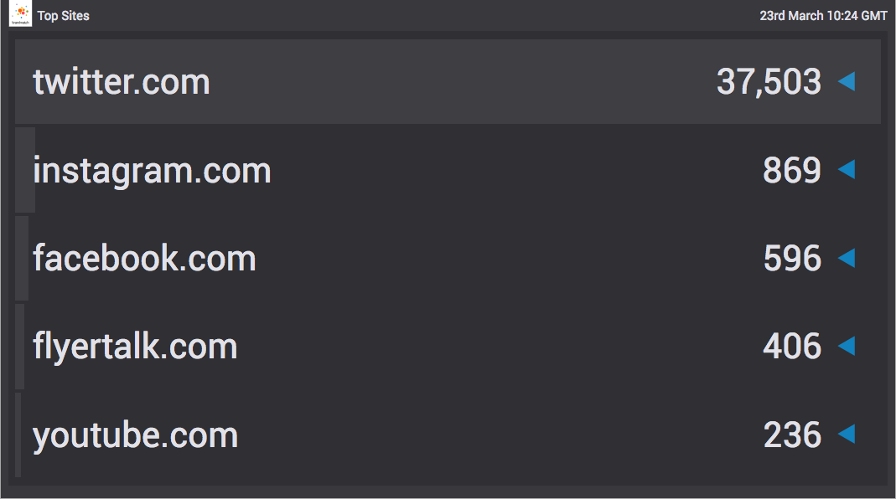

destination-table
Table destination encompassing table and bars views.

Demo
npm installnpm run watch
The demo page simply shows a split view of some sample data visualised as bars and table.
Data format
The expected data format is
[
{
"label": "foo",
"value": 1782,
"progress": 1
},
{
"label": "bar",
"value": 211,
"progress": 0
},
{
"label": "baz",
"value": 80,
"progress": -1
},
{
"label": "spam",
"value": 66,
"progress": 0,
"isNew": true
},
{
"label": "eggs",
"value": 62,
"progress": 1
}
]
Where:
labelString - name which will apear in the table rowvalueInt - number which will appear in the table rowprogressInt - relative motion of the entry. vizia-css classes will be applied for the appropriate arrow indiocator.- A positive value results in an upward arrow with class
vi-arrow-upand colour classvc-text-positive - A negative value results in an downward arrow with class
vi-arrow-downand colour classvc-text-negative - A zero value results in an leftward arrow with class
vi-arrow-leftand colour classvc-text-neutral
- A positive value results in an upward arrow with class
isNewBoolean - indicated the entry was not present in the previous measured period. Applies classesvi-arrow-leftandvc-text-highlight.